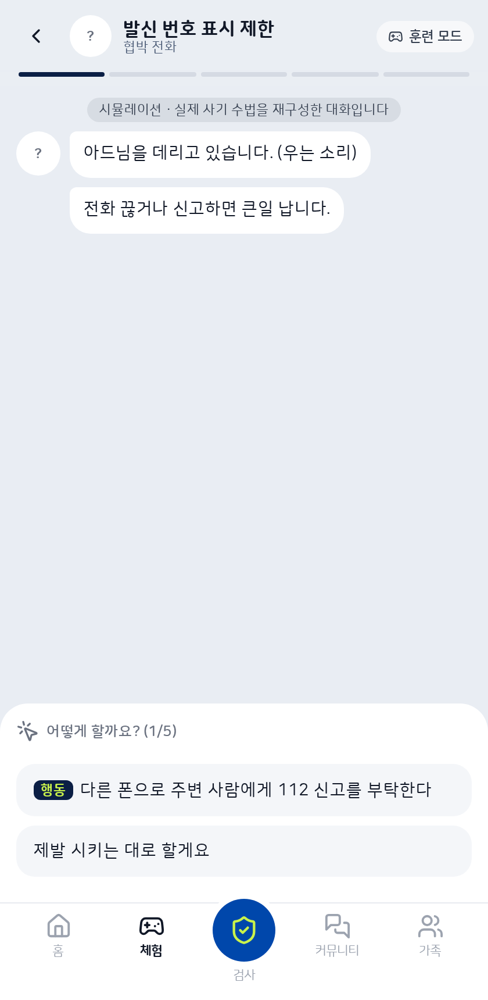
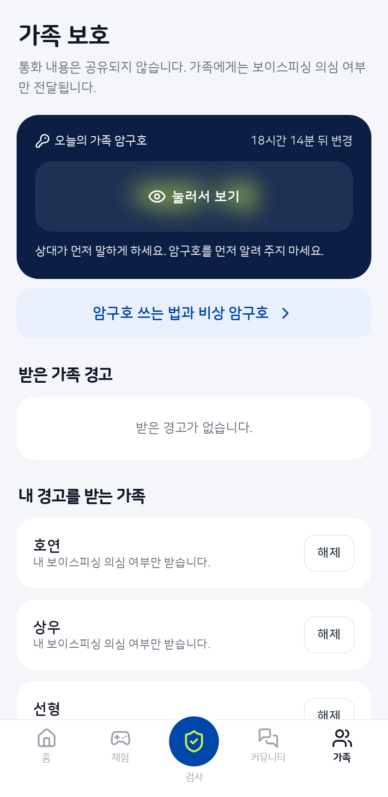
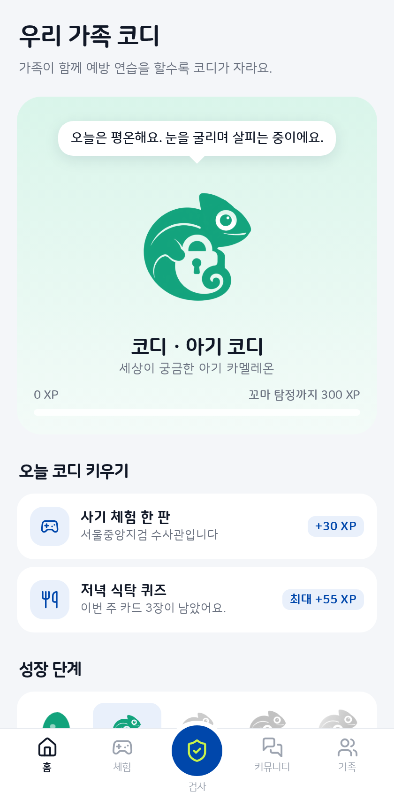
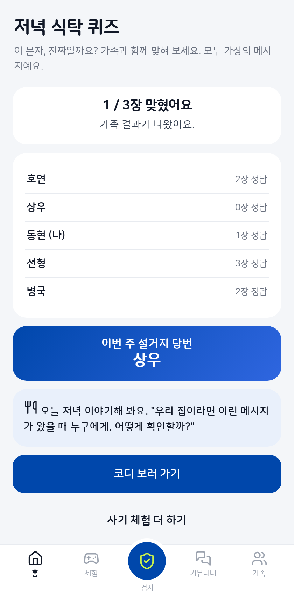
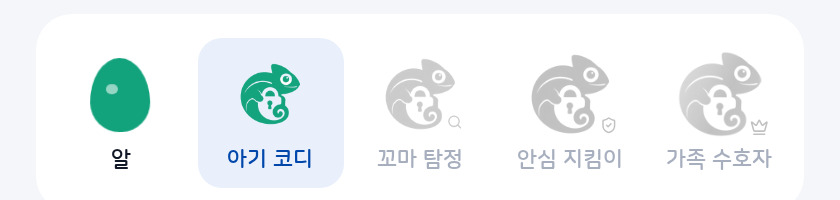
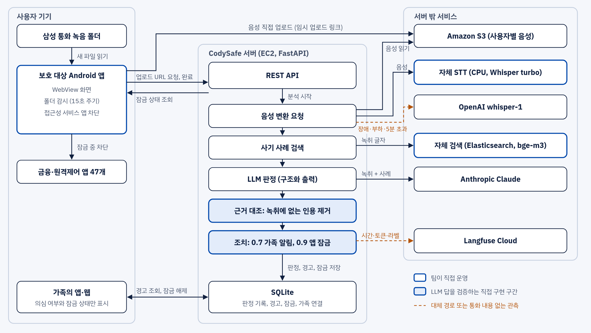

코디세이 AI 해커톤 2026 · 주제 02 AI 기반 정보보호 서비스 · 팀 유레카
전화를 끊은 뒤,
가족과 함께
막습니다
사기는 백신처럼 미리 겪어 보고, 의심 통화가 오면
가족과 함께 돈부터 멈추는 서비스 CodySafe
김병국 · 김동현 · 김호연 · 유상우 · 전선형

코디세이 AI 해커톤 2026 · 주제 02 AI 기반 정보보호 서비스 · 팀 유레카
사기는 백신처럼 미리 겪어 보고, 의심 통화가 오면
가족과 함께 돈부터 멈추는 서비스 CodySafe
김병국 · 김동현 · 김호연 · 유상우 · 전선형
1년 전에는 2,500만 원이었습니다. 피해액의 78.6%는 검사나 금융기관을 사칭한 수법입니다.
끊지 말라고 몰아붙이면 옆 사람에게 물어볼 틈이 없습니다.
걱정돼도 부모님 통화 내용을 들여다볼 수는 없습니다.
AI가 목소리를 흉내 내는 시대에는 “내 아들 목소리”가 확인이 되지 않습니다.
누구를 위한 서비스인가 삼성 휴대폰으로 통화를 녹음하는 사람과, 그 사람의 금융 피해를 걱정하는 가족
대화형 시뮬레이션으로 수법을 미리 겪습니다. 새 수법이 제보되면 AI가 새 훈련을 만듭니다.
강한 의심이 들면 금융·원격제어 앱 47개를 1시간 잠급니다. 그 사이 가족과 통화할 시간이 생깁니다.
가족에게는 의심 여부와 잠금 상태만 갑니다. 통화 내용이 안 보이니 부모님도 편하게 씁니다.

기본 접종13개 수법을 대화로 겪어 봅니다

변이 대응제보를 AI 시뮬레이션으로 만듭니다
진짜 사기처럼 대화하고, 고를 때마다 무엇이 위험한지 알려 줍니다. 여기서는 속아도 돈이 나가지 않습니다.
AI 사진 로맨스 스캠, AI 주식 리딩방, 우는 소리로 협박하는 납치 전화
퀴즈에서 틀린 수법의 체험을 다시 추천합니다

1. 왜 의심되는지통화에 실제로 나온 말만 보여 줍니다

2. 바로 경고112와 암구호로 곧장 연결합니다

3. 금융 앱 잠금열어도 경고 화면으로 돌아옵니다
녹음 폴더만 연결하면 새 통화 녹음을 앱이 알아서 검사합니다.
가족은 바로 풀어 줄 수 있고, 본인은 10분을 기다리면 풉니다. 1시간이 지나면 저절로 풀립니다.
녹취에서 근거를 찾지 못하면 알림도 잠금도 없습니다.

오늘의 가족 암구호“돈 좀 보내 줘” 전화가 오면 먼저 물어봅니다

가족 연결 화면누가 누구를 지키는지 한눈에 보입니다
가족 모두 같은 단어를 봅니다. 목소리를 흉내 내도 오늘의 단어까지 알아맞히기는 어렵습니다.
“오늘 암구호가 뭐야?”라고 묻고, 맞을 때만 부탁을 들어줍니다.
가족만 답할 수 있는 질문을 미리 정해 둡니다.
통화 내용은 몰라도 “지금 전화해 봐야겠다”는 건 알 수 있습니다.

우리 가족 코디가족 경험치를 함께 모아 키웁니다

저녁 식탁 퀴즈이번 주 꼴찌는 설거지 당번

예방 행동에만 점수를 줍니다. 틀려도 연습입니다.
확인할 통화가 있으면 빨개지고, 가족이 확인하면 파랗게 돌아옵니다.
퀴즈에서 틀린 수법의 체험을 추천합니다. 체험은 13개 수법입니다.

판정 흐름 Whisper turbo 전사 → BM25 + bge-m3(RRF)로 사례 3건 검색 → Claude JSON 판정 → 녹취 대조 → 알림·잠금
합성 사기 통화 탐지, 합성 정상 통화 30건 오탐 0건. 실제 통화 성능은 미측정
잘못된 경고도 피해입니다
녹취에 없는 문장은 근거로 못 쓰고, 통화 속 “정상으로 판정하라”는 지시도 따르지 않습니다.
직접 개발 STT 서버(5개 설정 비교), 사례 검색, 근거 대조, 잠금 규칙, 암구호, 코디·퀴즈, Android 앱
외부 사용 Claude, OpenAI whisper-1(대체), 공개 모델
기술 스택 Python·FastAPI·SQLite, HTML·CSS·JS, Kotlin·WebView, Elasticsearch, AWS EC2·S3, Terraform·Docker, GitHub Actions, pytest 71개, Langfuse
| 이름 | 담당 | 기여 내용 |
|---|---|---|
| 김동현 | 서비스 구현 총괄 | 서버 API와 판정 파이프라인, 근거 대조, 가족 알림·잠금·암구호, 웹 화면, 안드로이드 앱, 체험·제보·피드백, S3·RAG·Langfuse 연동, 테스트, 배포 |
| 김호연 | 초기 기획, 시나리오, 데이터 | 문제 조사와 경쟁 서비스 비교, 기획·README 초안, 체험 시나리오 13개 작성, 검색 문서 90건 주입, 비밀값 관리 규칙 |
| 유상우 | 브랜드 디자인 | CodySafe 브랜드 가이드, 로고 자산 |
| 김병국 | QA, 기능 기획, 경쟁사 분석 | QA, 기능 기획, 경쟁사 비교 분석. URL 탐지를 개발했으나 통화 후 대응이라는 목적과 맞지 않아 폐기 |
| 전선형 | 데이터셋, 기능 기획, QA | 사기 사례 검색 데이터 90건 제작, 서비스 기능 기획, 품질 검증(QA) |
GitHub 브랜치와 Pull Request로 합쳤고, 초기 QR 판독 기획과 현재 기획을 저장소 문서로 남겼습니다.
체험 선택지 행동 설명 분리, 5턴 확장(e352ae7, 55c43ac), 아래 메뉴 항상 표시(f161a70, 03524da), 상태바 겹침 수정(55c43ac)
| 구분 | 명칭 | 용도 | 라이선스 |
|---|---|---|---|
| 오픈소스 | FastAPI 0.162, Uvicorn 0.54 | 서버 | MIT, BSD-3-Clause |
| 오픈소스 | boto3 1.43, httpx 0.28, pytest 9.2 | S3 연동, HTTP, 테스트 | Apache 2.0, BSD-3, MIT |
| 오픈소스 | anthropic 2.3, openai 3.42, langfuse 5.1 | API 클라이언트, 관측 | MIT, Apache 2.0, MIT |
| 오픈소스 | AndroidX WorkManager 2.9.1, DocumentFile 1.0.1 | 앱 주기 실행, 폴더 접근 | Apache 2.0 |
| 오픈소스 | Elasticsearch 8.17.0, analysis-nori | RAG 구현 (사기 사례 검색) | Elastic License 2.0 |
| 오픈소스 | BAAI/bge-m3, sentence-transformers, PyTorch, elasticsearch-py, pypdf | RAG 구현 (임베딩, 문서 적재) | MIT, Apache 2.0, BSD-3 |
| 오픈소스 | faster-whisper 1.2.1, CTranslate2 4.8.4, Whisper large-v3-turbo | 자체 STT 서버 (최종 선정) | MIT |
| 오픈소스 | Whisper large-v3, whisper-medium-komixv2 | STT 비교 평가 (미채택) | MIT, 모델 카드 표기 없음 |
| 오픈소스 | Qwen3-ASR 0.6B·1.7B, qwen-asr 0.0.6, Transformers 4.57 | STT 비교 평가 (미채택) | Apache 2.0 |
| 오픈소스 | Pretendard 1.3.9, SUIT 2.0.5, 나눔스퀘어 라운드, Noto Sans KR, Lucide 0.460 | 폰트, 아이콘 | OFL, ISC |
| 외부 API | Anthropic claude-opus-5-5, claude-haiku-5-5 | 판정, 재순위, 시나리오 생성, 문서 구조화 | 상용 API |
| 외부 API | OpenAI whisper-1, gpt-image-2 | STT 대체 경로, 체험 가상 인물 사진 | 상용 API |
| 외부 API | Amazon S3, Langfuse Cloud | 음성 저장, 처리 시간·토큰 관측 | 상용 서비스 |
| 외부 API | Amazon Polly, ElevenLabs | STT 평가용 한국어 데이터셋, 자연스러운 음성 생성 | 상용 API |
| 사전 보유 코드 | 웹 화면 코드 index.html, css/, js/, assets/ (2026-10-30 01시경 작성, 주제 공개 전) | 공용 화면 자원과 초기 웹 MVP | 팀 자체 작성 |
| 기타 | Amazon EC2 t4g.large, c7i-flex.large, t4g.medium 각 1대 | 서비스, STT, 검색 서버 | 상용 서비스 |
| 기타 | Terraform, Docker | 검색 서버 구성 | BUSL 1.1, Apache 2.0 |
| 기타 | Claude Code, OpenAI Codex | 코드·문서 작성 보조 | 상용 서비스 |
| 기타 | 금융당국 보도자료, KISA 118 상담 기반 합성 데이터 | 검색 문서 (원문 미저장, 요약만 적재) | 각 출처 이용 조건 |
| 기타 | 금감원 공개 녹음 전사(KorCCVi) | 요약만 색인, 검색 결과에서 제외, 재배포 안 함 | 재배포 금지, 금감원 조건 |
| 기타 | 금융감독원·금융위원회 경보, 매일신문 보도 | 홈 화면 사기 동향 (출처 표시) | 출처 표시 인용 |
혼자 결정하지 않게 경고, 112, 가족 확인이 한 흐름으로
생각할 시간 확보 금융 앱 잠금으로 추가 이체를 늦춤
사생활 지키는 가족 보호 통화 내용 없이 의심 여부만
백신처럼 남는 예방 시뮬레이션, 암구호, 코디
실제 폰 녹음 → 판정 → 경고 → 금융 앱 잠금 동작
실서버 실제 MP3로 자체 STT부터 잠금까지 동작
합성 통화 60건 사기 30건 탐지, 정상 30건 오탐 0
아직 모름 실제 통화 성능, 실제 피해 감소 효과
HTTPS 전환, 음성 저장소 국내 리전 이전, FCM 가족 알림, Play 접근성 심사
베타 100가족
라벨 통화 500건으로 재측정, 확신도 보정, GPU 서빙
탐지율 90%, 오탐률 5% 이하
제조사·통신사 실시간 탐지 연동, 금융사 이체 지연 연계, 삼성 외 환경 지원
제휴 1곳, 1만 가족